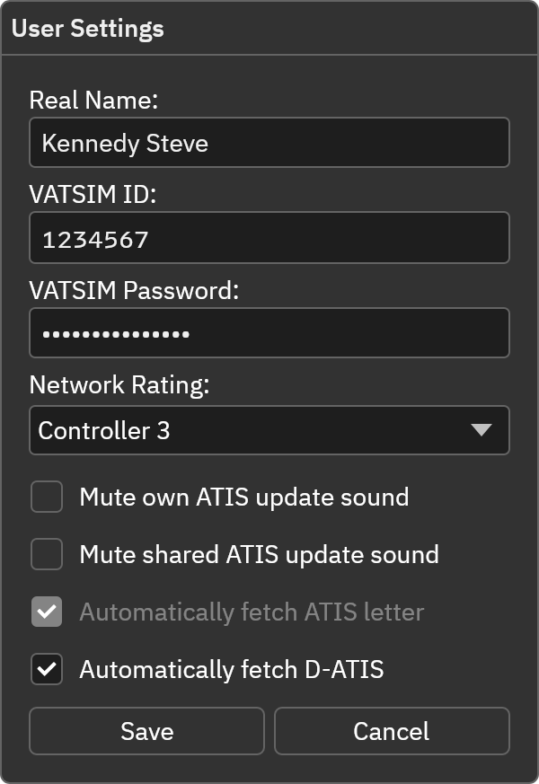

本页目录
用户设置
在主窗口点击 User Settings 打开设置。
| 设置 | 说明 |
|---|---|
| Real Name / 姓名 | 在 CAN 网络中显示的姓名或网络规定的标识 |
| CAN ID | 你自己的 CAN 数字 ID |
| Password / 网络密码 | CAN 网络密码，不是 VATSIM 密码 |
| Network Rating | 与 CAN 账号和权限匹配的网络等级 |
| Mute own ATIS update sound | 关闭本机发布席位的更新提示音 |
| Mute shared ATIS update sound | 共享情报更新提示音选项；CAN 当前未接通原版共享 Hub |
| Automatically fetch ATIS letter | 从数字情报服务获取受支持机场的真实 ATIS 字母 |
| Automatically fetch D-ATIS | 为选中的 D-ATIS 预设填入真实运行情况和通告，同时启用字母获取 |
数字情报是否可用取决于 CAN 数据接口覆盖，不保证所有 FAA 或中国机场均有返回。具体行为见ATIS 席位。
点击 Save 保存，或 Cancel 放弃修改。在迷你窗口中隐藏的席位不会播放更新提示音。
账号与分享
每位用户在自己的电脑填写自己的 CAN 资料。项目、文档、公共配置和发布包中不包含任何维护者个人的账号、密码或令牌。当前 TTS 不会读取你安装的原版 vATIS 的账号配置。
操作截图参考
以下为上游原版截图，保留英文标签。用于定位操作；品牌、登录字段与网络行为以本页 CAN 说明为准。
